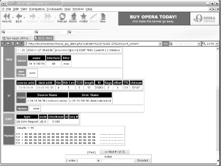

|
|
< Day Day Up > |
|
Hack 59 Intrusion Detection with Snort, ACID, MySQL, and FreeBSD
How the alert administrator catches the worm. With the current climate of corporate force reductions and the onslaught of new, fast-spreading viruses and worms, today's administrators are faced with a daunting challenge. Not only is the administrator required to fix problems and keep things running smoothly, but in some cases he is also responsible for keeping the network from becoming worm food. This often entails monitoring the traffic going to and from the network, identifying infected nodes, and loading numerous vendor patches to fix associated vulnerabilities. To get a better handle on things, you can deploy an Intrusion Detection System (IDS) on the LAN to alert you to the existence of all the nastiness associated with the dark side of the computing world. This hack will show you how to implement a very effective and stable IDS using FreeBSD, MySQL, Snort, and the Analysis Console for Intrusion Databases (ACID). While that means installing and configuring a few applications, you'll end up with a feature-rich, searchable IDS capable of generating custom alerts and displaying information in many customizable formats. 6.7.1 Installing the SoftwareWe'll assume that you already have FreeBSD 4.8-RELEASE or newer installed with plenty of disk space. The system is also fully patched and the ports collection is up-to-date. It also helps to be familiar with FreeBSD and MySQL commands. 6.7.1.1 Install PHP4, Apache, and MySQLWe'll start by installing PHP4, Apache, and the MySQL client. As the superuser: # cd /usr/ports/www/mod_php4 # make install clean When the PHP configuration options screen appears, choose the GD Library Support option. Leave the other default selections, and choose OK. The build itself will take a while because it must install Apache and the MySQL client in addition to PHP. 6.7.1.2 Install MySQL-serverYou'll also need the MySQL server, which is a separate port. To ensure this port installs correctly, temporarily set the system hostname to localhost: # hostname localhost # cd /usr/ports/databases/mysql40-server # make install clean This one will also take a while. 6.7.1.3 More installationsThere are a few other ports to install. The next three applications are used by ACID to create graphs of the output. ACID supports bar graphs (as shown in Figure 6-3), line graphs (Figure 6-4), and pie charts (Figure 6-5). Figure 6-3. An ACID bar graphFigure 6-4. An ACID line graphFigure 6-5. An ACID pie chartWe'll need adodb , a database library for PHP: # cd /usr/ports/databases/adodb # make install clean PHPlot adds a graph library to PHP so it will support charts: # cd /usr/ports/graphics/phplot # make install clean JPGraph adds more support to PHP for graphs: # cd /usr/ports/graphics/jpgraph # make install clean Finally, we must install ACID and Snort. Start by modifying snort's Makefile to include MySQL support: # cd /usr/local/ports/security/snort # vi Makefile Change: CONFIGURE_ARGS= --with-mysql=no to: CONFIGURE_ARGS= --with-mysql=yes Save your changes and exit. Finally, install acid, which will also install snort using your modified Makefile: # cd /usr/ports/security/acid # make install clean 6.7.2 ConfiguringNow that we've installed all the necessary pieces for our IDS, it's time to configure them to work together. 6.7.2.1 Configure Apache and PHPYou'll need to make two changes to Apache's configuration file, /usr/local/etc/apache/httpd-conf. First, search for #ServerName, remove the hash mark (#), and change www.example.com to your actual server name. Then, for security reasons, change ServerSignature On to ServerSignature Off. This prevents the server from providing information such as HTTP server type and version. Most admins who run IDSs on their networks like to keep their presence somewhat hidden, since there are exploits/tools written to defeat IDS detection. 6.7.2.2 Configure PHPAfter installing PHP, you will notice two sample configuration files in /usr/local/etc, php.ini-dist and php.ini-recommended. As the name suggests, the latter is the recommended PHP 4-style configuration file. It contains settings that make PHP "more efficient, more secure, and [encourage] cleaner coding." Since our focus is security, I recommend using this file. Configuring PHP is as simple as copying the sample configuration file to /usr/local/etc/php.ini: # cd /usr/local/etc # cp php.ini-recommended php.ini 6.7.2.3 Configure MySQLMySQL supports several configurations. Use my-small.cnf or my-medium.cnf if you have less than 64 M of memory, my-large.cnf if you have 512 M, and my-huge.cnf if you have 1-2 G of memory. Later, if you find your system running out of swap space, you can stop mysql and copy one of the smaller *.cnf files to fix the problem. In my example, I'll copy over my-large.cnf: # cp /usr/local/share/mysql/my-large.cnf /etc/my.cnf Next, set up the initial databases and install the server: # /usr/local/bin/mysql_install_db # /usr/local/etc/rc.d/mysql-server.sh start You can use the sockstat command to confirm that the MySQL server is running. You should see MySQL listening on port 3306: # sockstat | grep mysql USER COMMAND PID FD PROTO LOCAL ADDRESS FOREIGN ADDRESS mysql mysqld 16262 5 tcp4 *:3306 *:* mysql mysqld 16262 6 stream /tmp/mysql.sock Then, set the password for the root MySQL user. You'll have to use the FLUSH PRIVILEGES command to tell MySQL to reload all of the user privileges, or the server will continue using the old (blank) password until it restarts: # /usr/local/bin/mysql -u root
Welcome to the MySQL monitor. Commands end with ; or \g.
Your MySQL connection id is 1 to server version: 4.0.16-log
Type 'help;' or '\h' for help. Type '\c' to clear the buffer.
mysql>SET PASSWORD FOR root@localhost=PASSWORD('
your_password_here
');
mysql>FLUSH PRIVILEGES;
Query OK, 0 rows affected (0.00 sec)Then, you can create the snort database: mysql>CREATE DATABASE snort; Query OK, 1 row affected (0.00 sec) Now we can create a MySQL user with sufficient permissions to access the new snort database. Do not use the MySQL root user! By creating a new user who has access to only one database, we've limited the damage an attacker could do if he ever gained access to this account. MySQL uses the GRANT command to give users access to databases. You can control which types of statements the user can issue, as well as the network hosts from which the user can access MySQL. localhost is a nice, safe setting, as we only need to access the database from the local machine. Again, this restricts the damage that an attacker could do from another compromised host. mysql> GRANT INSERT,SELECT ON snort.* to snort_user_here @localhost \ IDENTIFIED BY ' snort_users_password '; Query OK, 0 rows affected (0.00 sec) mysql> GRANT INSERT,SELECT,CREATE,DELETE on snort.* \ to snort_user_here @localhost IDENTIFIED BY ' snort_users_password '; Query OK, 0 rows affected (0.01 sec) mysql> FLUSH PRIVILEGES; Query OK, 0 rows affected (0.01 sec) mysql> quit Bye 6.7.2.4 Configure SnortFirst you'll need to download the latest sources from http://www.snort.org (currently v2.0.5). After unpacking, use the create_mysql file to create the necessary tables in the snort database. That's all the configuration you need; you can now simply delete the unpacked directory. # tar xvfz snort-2.0.5.tar.gz # cd snort-2.0.5/contrib # cp create_mysql /tmp # /usr/local/bin/mysql -p < /tmp/create_mysql snort Enter password: Enter the MySQL root password here # cd /usr/local/etc # cp snort.conf-sample snort.conf # vi snort.conf Scroll down until you reach the # output database: log, mssql, dbname=snort user=snort password=test line. Insert the following lines beneath it: output database: log, mysql, user=mysql_user_name password=mysql_users_
password dbname=snort host=localhost
output database: alert, mysql, user=mysql_user_name password=mysql_users_
password dbname=snort host=localhostNow page down toward the bottom of the file and select the types of rules you want to monitor for. Keep in mind that the more rules you use, the more work snort will have to do, using up CPU cycles and memory that might be better used elsewhere. For example, if you don't want to monitor X11 or Oracle on any computer on your network, comment out those rules. When you're done, save your changes and exit. Finish by creating the snort log directory: # cd /var/log # mkdir snort 6.7.2.5 Configure ACIDStart by tightening the permissions of the configuration file: # chmod 644 /usr/local/www/acid/acid_conf.php
Then, change the section that contains alert_dbname = "snort_log"; to include the appropriate entries: $alert_dbname = "snort"; $alert_host = "localhost"; $alert_port = ""; $alert_user = "mysql_snort_user"; $alert_password = "mysql_snort_users_password"; Leave the Archive parameters alone, unless you want to create a separate database for snort to store archived alert messages in. To do this, you'll need to log into MySQL, create an archive database, set the appropriate permissions, and run the mysql_create script again as described earlier. The Snort and ACID documentation describe this in more detail. You do need to tell ACID where to find some of the libraries installed earlier. In particular, change: $ChartLib_path = ""; to: $ChartLib_path = "/usr/local/share/jpgraph"; 6.7.3 Running ACID# /usr/local/sbin/apachectl start /usr/local/sbin/apachectl start: httpd started Then, link the ACID web directory. Of course, for security reasons, I recommend giving the link name something other than acid. # cd /usr/local/www/ # ln -s /usr/local/www/acid /usr/local/www/snort Point your web browser to http://localhost/snort/acid_main.php and click the Setup link. Click the Create ACID AG button to create the extended tables that ACID will use. When it finishes, you should see something similar to the following: Successfully created 'acid_ag' Successfully created 'acid_ag_alert' Successfully created 'acid_ip_cache' Successfully created 'acid_event' Now click the Main page link to be taken to ACID's main display page. At this point you might ask, "Where are the alerts?" There aren't any—we didn't start snort! 6.7.4 Running SnortFirst, try starting snort manually to make sure it works. Use the -i switch to specify the network interface that will be monitoring traffic. In my case, it is xl0. # cd /usr/local/etc
# /usr/local/bin/snort -c snort.conf -i xl0
database: using the "alert" facility
1458 Snort rules read...
1458 Option Chains linked into 146 Chain Headers
0 Dynamic rules
+++++++++++++++++++++++++++++++++++++++++++++++++++
Rule application order: ->activation->dynamic->alert->pass->log
--= = Initialization Complete = =--
-*> Snort! <*-
Version 2.0.5 (Build 98)
By Martin Roesch (roesch@sourcefire.com, www.snort.org)If snort doesn't show any errors, as depicted here, pat yourself on the back: snort is running! Quit snort by pressing Ctrl-C, and restart it in daemon mode: # /usr/local/bin/snort -c snort.conf -i xl0 -D Now flip on over to the ACID display page in your web browser. You should start to see alerts coming in. Figure 6-6 shows a sample alert listing. Figure 6-6. ACID alertsNote that each detected signature includes a hyperlink to information about that particular type of attack. Snort also keeps track of how many packets matched that signature, the number of unique source and destination addresses, and the time frame between the first and last packet. You can also configure your own alert groups to better organize your results, as shown in Figure 6-7. Figure 6-7. ACID alert groupsACID can also display each rogue packet in intimate detail, as seen in Figure 6-8. Figure 6-8. An ACID packet in detailKeep in mind that you'll probably start getting false positives, depending on the types of traffic on your network. However, these can easily be weeded out by making the appropriate changes to your /usr/local/etc/snort.conf file and the rule files in /usr/local/share/snort. If you start noticing a bunch of alerts that look like Figure 6-9, it's a good indication that some nodes on your network are infected with a virus or worm. Figure 6-9. Suspicious Snort alerts6.7.5 Hacking the HackSnort and ACID have many additional features. For example, you can use your favorite mail transfer agent, such as Sendmail or Postfix, to send out email alerts, and you can create an archive database to store alerts generated by snort. There's even a snort plug-in for the Big Brother System and Network Monitor that can alert you when 30 or more alerts are generated. You can also add additional security to MySQL, Snort, and ACID by creating a nonprivileged snort user and locking down the /usr/local/www/acid directory with the use of a properly configured .htaccess file. Configuration of these features goes beyond the scope of this hack, but I encourage you to read all the documentation included with these applications, as well as the documentation at each application's home page, to find out how you can tailor them to suit your needs. 6.7.6 See Also
|
|
|
< Day Day Up > |
|